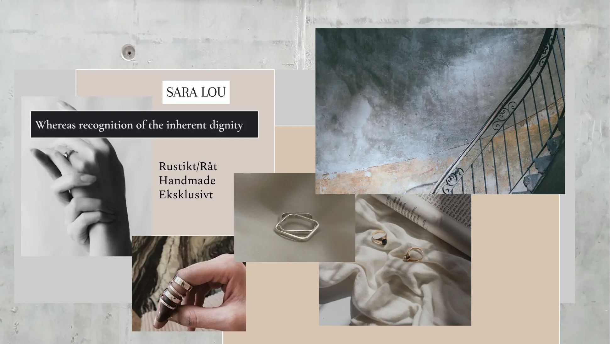
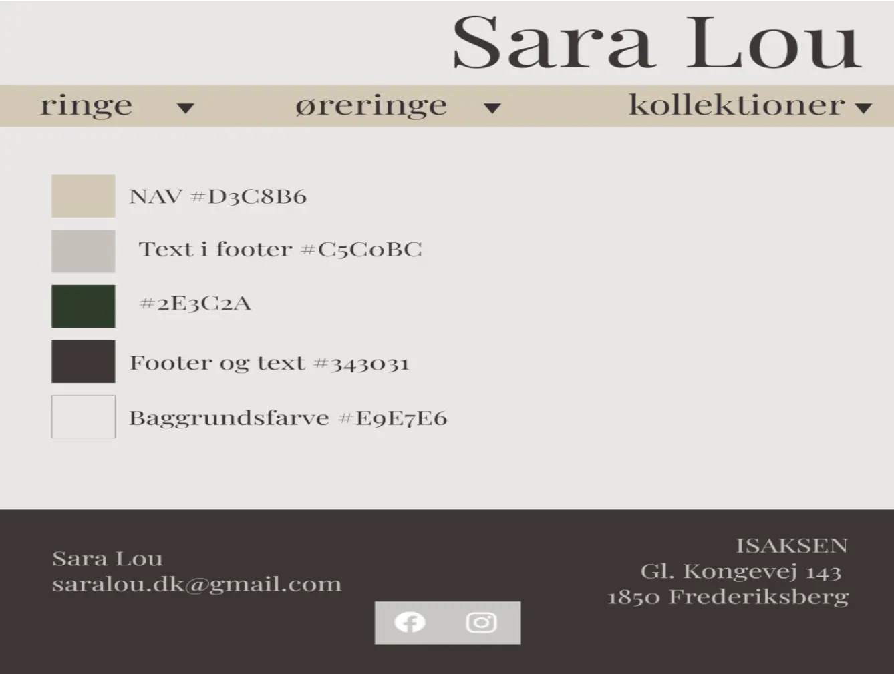
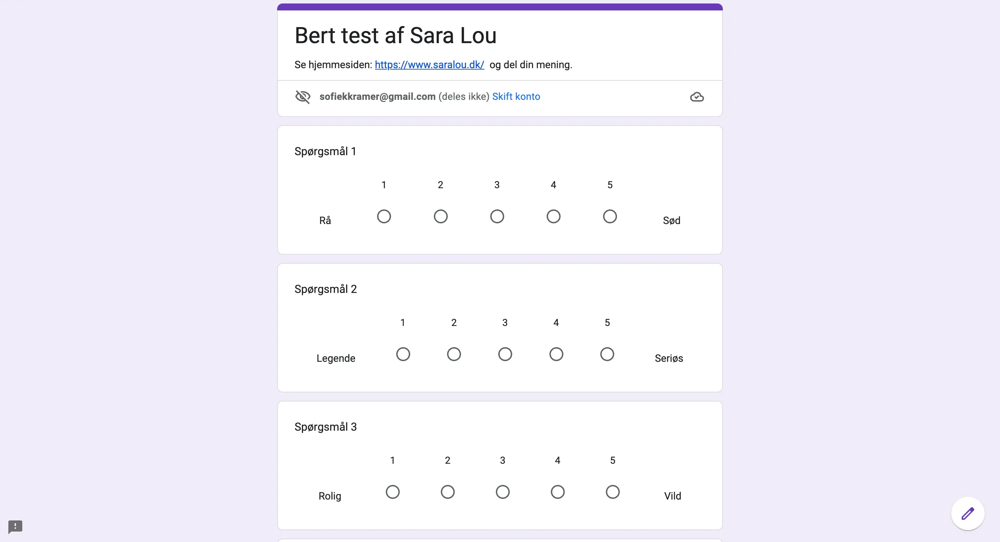

Grundlæggende indhold
Pilotsite var en opgave hvor jeg skulle producere en lille film på 1. minut som skulle klippes sammen ved hjælp af Adobe premiere pro. Jeg valgte at filme min kollega der arbejder i en tøjbutik med navnet "Moss Copenhagen". I forløbet her lærte jeg om film shots (long shot, close-up, high angle, low angle), jeg lærte også om at bruge rettighedsfrit musik. Meningen ved denne opgave var at få lært det grundlæggende indhold til hovedopgaven. Klik her for Pilotsite
Redesign og Temadokumentation handlede om at programmere og designe en hjemmeside for en selvvalgt virksomhed. Vi var en gruppe på 4 som skulle lave en website i samarbejde, hvor vi også skulle udarbejde en gruppekontrakt. Vi lærte om SCRUM (trello board) som er en måde at få et overblik over hvor langt vi sammen og hver især var med forskellige opgaver. Vores valgte virksomhed var "SaraLou" som er min søsters selvopstartende smykkebrand. Vi udarbejdede reserchmetoder som Survey og et interview som vi brugte som kilder gennem vores hjemmeside og video. Vi Sluttede af med at lave en 5-sec test og en Eksperttest. Klik her for Redesign og Temadokumentation
I Redesign og temadokumentations er hovedopgaven skulle vi præsentere vores virksomhed og formidle en kort video, om virksomhedens produkt og service. Herudover lavede vi også en video hvor vi interviewer Designeren. Vi gjorde brug af et kamera, tripod, stativer og en audio-recorder fra Tech-lab.
Styletile
 Bert test
Herunder har vi udarbejdet en BERT-test som er en kvantitativ undersøgelse for at forstå hvordan folk føler ens design er skabt. Testen er et spørgeskema som skal udrettes ud fra vores hjemmeside.  Klik her for Bert test